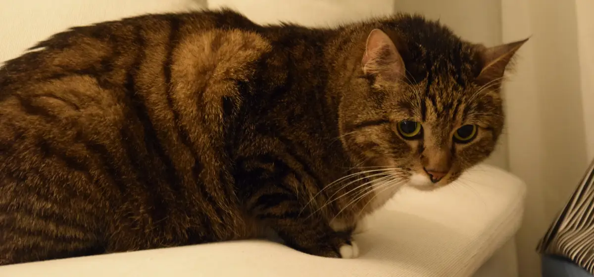

Havu
Havu arrived to brighten our lives — and Ruska’s — on December 30th, 2024. He immediately charmed all of us with his social personality, endless energy, and playful spirit. It took only three weeks for him and Ruska to become the very best cat friends.
Havu is a mudcake-colored tabby with little white paws. We often call him our big-eyed panther for fairly obvious reasons. He has an incredibly sweet and slightly pleading gaze that is difficult to resist.
Havu absolutely refuses to wear a harness or be carried in anyone’s arms. However, he loves rubbing against hands and happily curls up beside us — or directly on top of our chest — for naps and cuddles.
He is also an exceptionally agile cat and hunts toys with true professional precision.